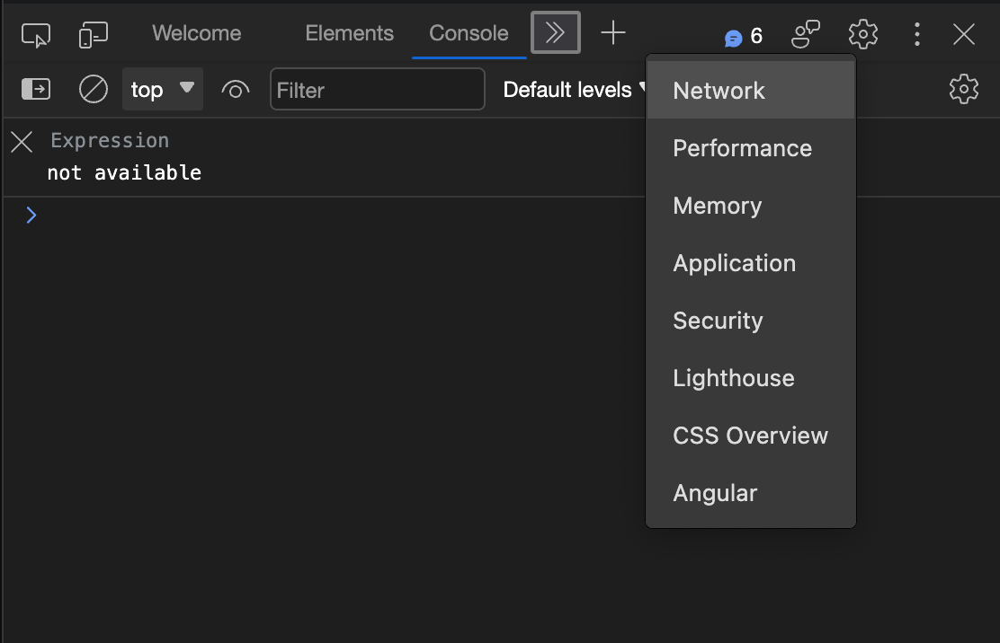
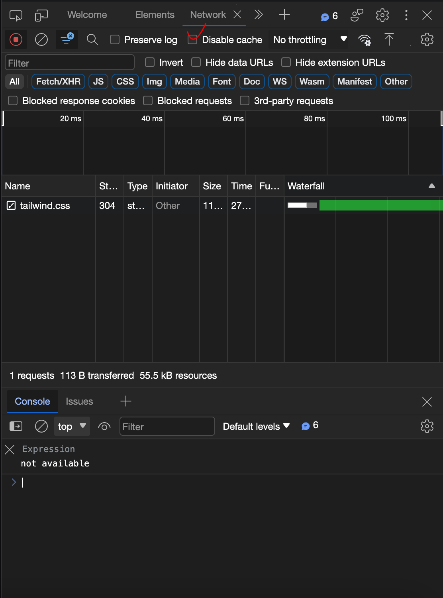
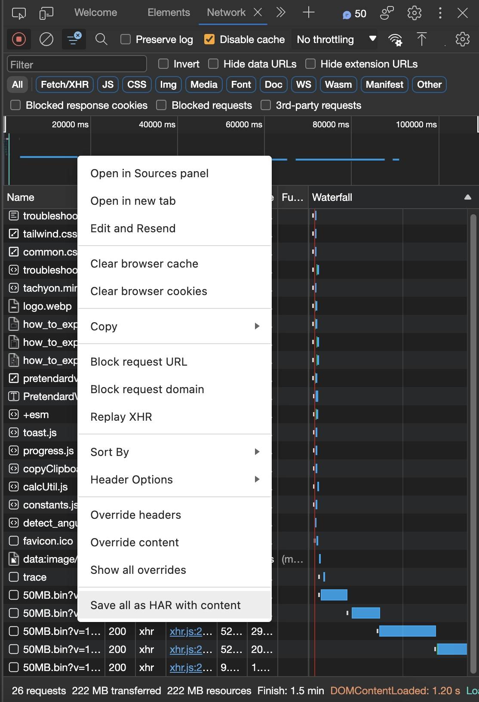

WAKTAVERSE Games CDN Test
· 측정에 약 500MB의 데이터를 사용합니다.
· 모바일 데이터 환경에서는 요금이 부과될 수 있습니다.
본 작업은 크롬/엣지/웨일 브라우저에서만 진행이 가능합니다.
1. 개발자 도구를 엽니다. (단축키: Ctrl + Shift + I or ⌘ + ⌥ + I)
2. 새로 열린 창에서 네트워크(Network) 탭으로 이동합니다. 
3. Disable cache에 체크합니다. 
4. 아래 '측정 시작하기'를 눌러 측정을 시작합니다. (개발자 도구 창은 닫지 마세요.)
5. 측정이 완료되면, 개발자 도구 네트워크 탭의 하단 항목들에서 우클릭 하여 Save as HAR with content (모두 컨텐츠를 포함한 HAR로 저장)를 눌러 저장합니다. 
2. 새로 열린 창에서 네트워크(Network) 탭으로 이동합니다.
3. Disable cache에 체크합니다.
4. 측정을 시작합니다. (개발자 도구 창은 닫지 마세요.)
5. 측정이 완료되면, 개발자 도구 네트워크 탭 한 가운데서 우클릭 하여 Save as HAR with content (모두 컨텐츠를 포함한 HAR로 저장)를 눌러 저장합니다.